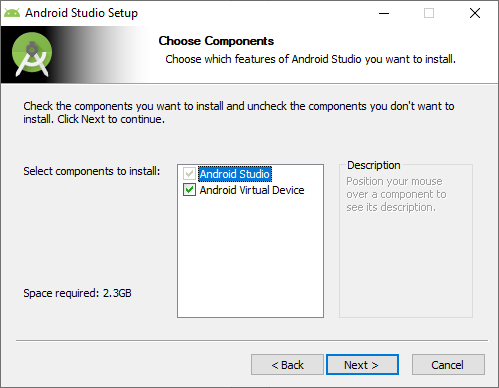
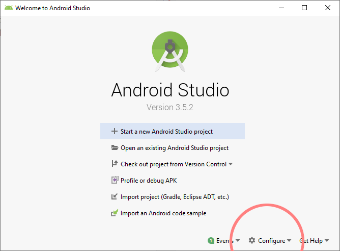
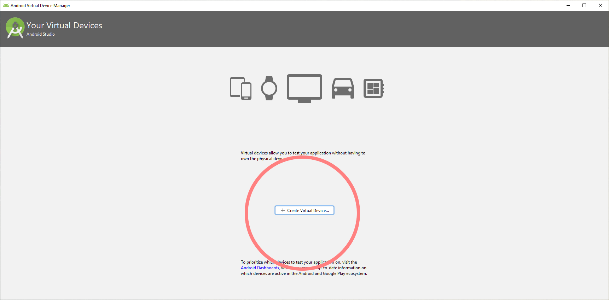
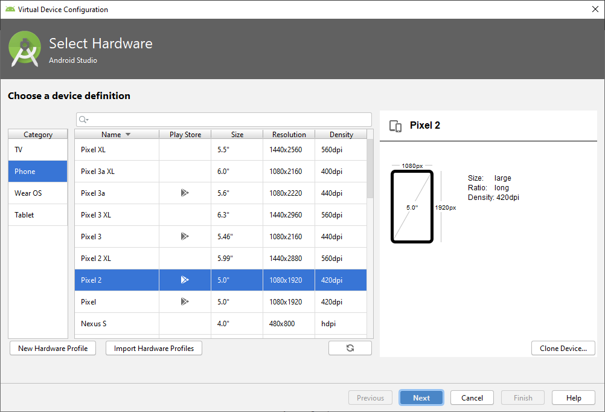
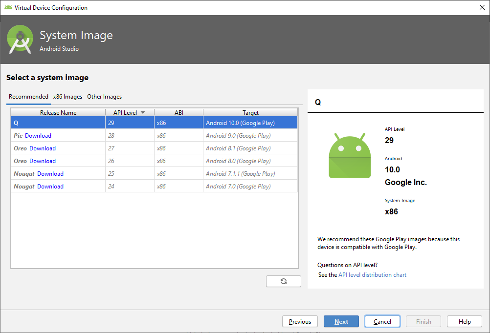
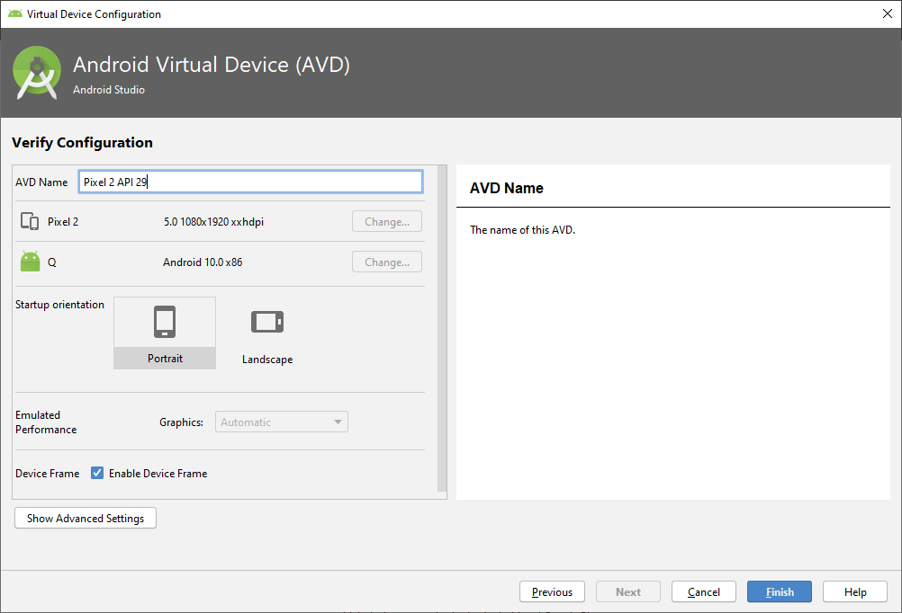
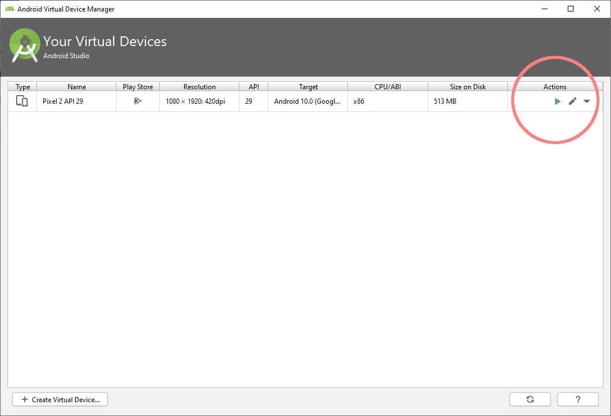
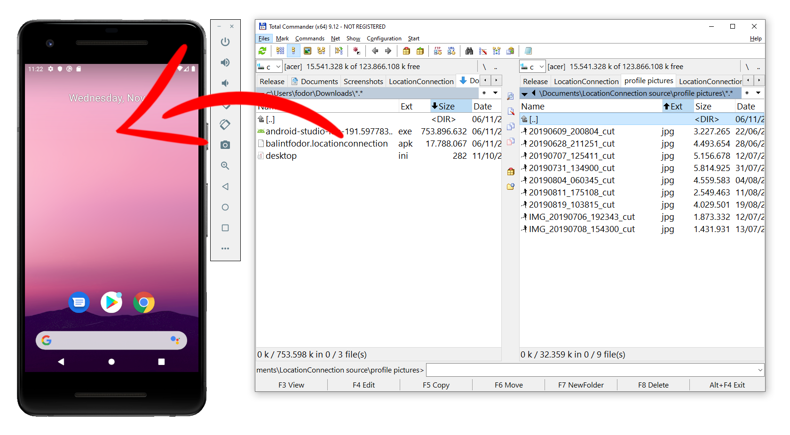
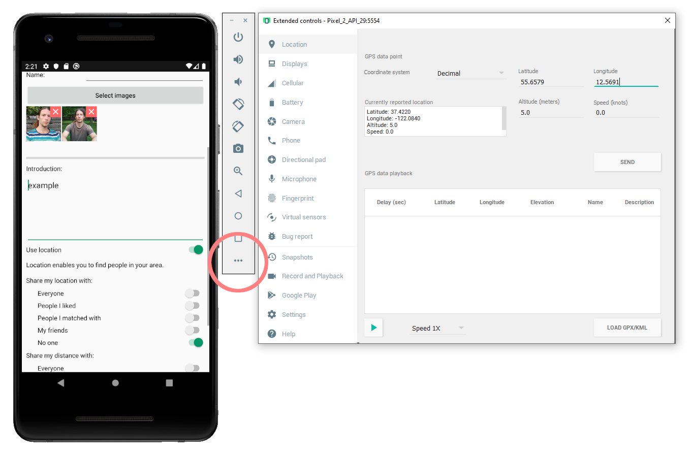
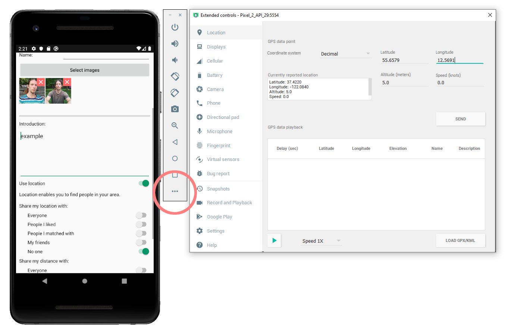

An iOS version is planned after I am finished with Android.
For now, you can use an emulator on your computer.
1. Download Android Studio, and run the installer.
developer.android.com/studio
2. Make sure, "Android Virtual Device" is checked.

3. Select Configure -> AVD manager

4. Click on Create Virtual Device...

5. Select the default hardware, or choose another one.

6. Select the Android version. It will take a few minutes to download and install.

7. In the following window, click on Finish.

8. Now you have your device set up. Click on the green triangle to start it.

9. Open a file manager next to the phone, and drag the installer into it. (Download it here: balintfodor.locationconnection.apk, or find in Play Store: Location Connection - Open source dating platform)

10. Swipe up from the bottom, and launch the app.
The start page should appear, and you can look through the registered users.
11. Now, if you want to register, you will need to transfer pictures to the phone. Drag them the same way you did with the installer.
When you press the button on the form, and the file selector window appears, click on the left menu and Downloads to find your pictures.
 12. If you want to share your location, you can set one here.

Tip: You can enlarge the device by dragging at its corner.
12. If you want to share your location, you can set one here.

Tip: You can enlarge the device by dragging at its corner.
If your device ever freezes, you might need to restart your computer, and instead of running it again normally next time as in Step 8, you need to open the dropdown menu, and select "Cold Boot Now".
I previously experienced that pressing the home button to exit the app crashes the device, while the back button works. Your computer speed and memory size might also have an effect.
Did you succeed, or ran into an issue? You can leave a feedback here.